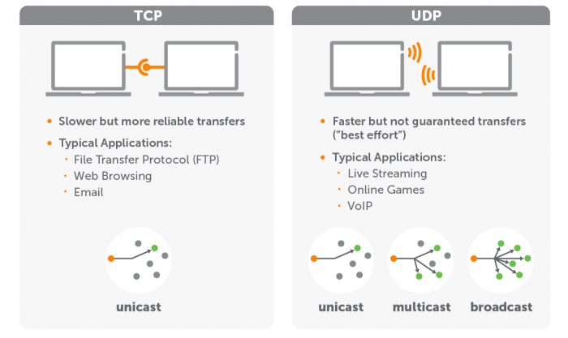

Modelo OSI
Modelo TCP/IP
UDP
DNS
DHCP
FTP
HTTP/HTTPS
WebServer
Modelo TCP/IP:
O TCP (Protocolo de Controle de Transmissão) e o IP (Protocolo de Internet) são conjuntos de protocolos que visam a interconexão dos mais diversos dispositivos na internet. Ou seja, eles especificam como a comunicação deve ser feita dentro da rede.

UDP:
O Protocolo UDP é um protocolo de comunicação utilizado em toda a internet para transmissões com validade especialmente limitada, tais como reproduções de vídeo ou pesquisas no DNS. Ele acelera as comunicações ao não estabelecer formalmente uma conexão antes que os dados sejam transferidos. Isso permite que os dados sejam transferidos muito rapidamente.
DNS:
O DNS é um sistema que contém uma lista de nomes de domínio e permite que usuários encontrem uma página por meio desses nomes. É fundamental para o funcionamento da internet, para otimizar o desempenho e a segurança de um site. O sistema DNS é crucial para a comunicação de sites na internet. Qualquer estratégia que envolve expansão no ambiente digital precisa considerar esse conceito, sua configuração e suas implicações.
DHCP:
O protocolo DHCP é um protocolo de cliente/servidor que fornece automaticamente um host IP (Protocolo de Internet) com seu endereço IP e outras informações de configuração relacionadas, como a máscara de sub-rede e o gateway padrão. Cada dispositivo em uma rede baseada em TCP/IP deve ter um endereço IP unicast exclusivo para acessar a rede e seus recursos. Sem o DHCP, os endereços IP para novos computadores ou computadores movidos de uma sub-rede para outra devem ser configurados manualmente.
FTP:
FTP (File Transfer Protocol) é um protocolo de rede para a transmissão de arquivos entre computadores. Ele é um protocolo da camada de aplicação para o download e upload de arquivos em conexões do tipo cliente/servidor.
Um servidor FTP é um computador dedicado para transferir arquivos e facilitar o compartilhamento remoto de dados via internet entre um servidor (remetente) e um computador cliente (destinatário) através de uma conexão baseada no protocolo FTP.
HTTP/HTTPS:
Http: O Hypertext Transfer Protocol, sigla HTTP é um protocolo de comunicação utilizado para sistemas de informação de hipermídia, distribuídos e colaborativos. Ele é a base para a comunicação de dados da World Wide Web. Http/Hipertexto: É o texto estruturado que utiliza ligações lógicas entre nós contendo texto. Https: HTTPS é uma implementação do protocolo HTTP sobre uma camada adicional de segurança que utiliza o protocolo TLS/SSL. Essa camada adicional permite que os dados sejam transmitidos por meio de uma conexão criptografada e que se verifique a autenticidade do servidor e do cliente por meio de certificados digitais.
WebServer:
De maneira simplificada, um servidor web é um computador responsável pelo armazenamento, processamento e entrega dos arquivos dos sites para os navegadores. Através deste processo, os servidores web carregam e entregam a página solicitada para o navegador do usuário - como o Google Chrome, por exemplo. Utilizam o Simple Mail Transfer Protocol (SMTP) e File Transfer Protocol (FTP) para processar arquivos para emails e armazenamento.